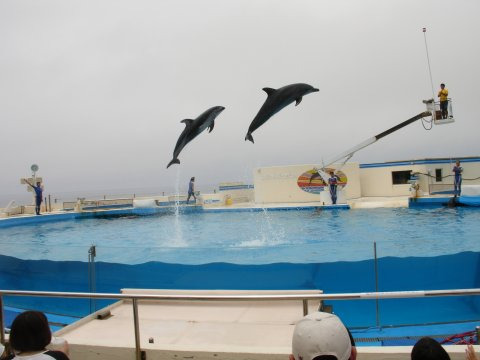

|
Tokyo - Tokyo offers a seemingly unlimited choice of shopping, entertainment, culture and dining to its visitors. The city's history can be appreciated in districts such as Asakusa, and in many excellent museums, historic temples and gardens. Contrary to common perception, Tokyo also offers a number of attractive green spaces in the city center and within relatively short train rides at its outskirts. |
| Miyajima - While officially named Itsukushima, the island is more commonly referred to as Miyajima, Japanese for "shrine island". This is because the island is so closely related to its key shrine, Itsukushima Shrine, in the public's mind. Like the torii gate, the shrine's main buildings are built over water | |
 |
Okinawa Chauraumi Aquarium -The Chauraumi Aquarium is widely considered Japan's best aquarium. It is the main attraction of the Ocean Expo Park on the former grounds of the 1975 International Ocean Expo in northern Okinawa Honto. The aquarium was completely redesigned and reopened in 2002. |